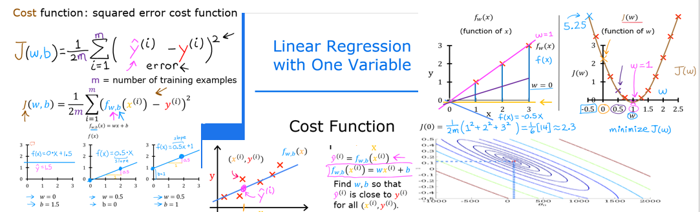

Optional Lab: Cost Function

Goals
In this lab you will: - you will implement and explore the cost function for linear regression with one variable.
Tools
In this lab we will make use of: - NumPy, a popular library for scientific computing - Matplotlib, a popular library for plotting data - local plotting routines in the lab_utils_uni.py file in the local directory
[2]:
import numpy as np
%matplotlib widget
import matplotlib.pyplot as plt
from lab_utils_uni import plt_intuition, plt_stationary, plt_update_onclick, soup_bowl
plt.style.use('./deeplearning.mplstyle')
Problem Statement
Size (1000 sqft) |
Price (1000s of dollars) |
|---|---|
1 |
300 |
2 |
500 |
[3]:
x_train = np.array([1.0, 2.0]) #(size in 1000 square feet)
y_train = np.array([300.0, 500.0]) #(price in 1000s of dollars)
Computing Cost
The term ‘cost’ in this assignment might be a little confusing since the data is housing cost. Here, cost is a measure how well our model is predicting the target price of the house. The term ‘price’ is used for housing data.
The equation for cost with one variable is:
where
\(f_{w,b}(x^{(i)})\) is our prediction for example \(i\) using parameters \(w,b\).
\((f_{w,b}(x^{(i)}) -y^{(i)})^2\) is the squared difference between the target value and the prediction.
These differences are summed over all the \(m\) examples and divided by
2mto produce the cost, \(J(w,b)\). >Note, in lecture summation ranges are typically from 1 to m, while code will be from 0 to m-1.
The code below calculates cost by looping over each example. In each loop: - f_wb, a prediction is calculated - the difference between the target and the prediction is calculated and squared. - this is added to the total cost.
[4]:
def compute_cost(x, y, w, b):
"""
Computes the cost function for linear regression.
Args:
x (ndarray (m,)): Data, m examples
y (ndarray (m,)): target values
w,b (scalar) : model parameters
Returns
total_cost (float): The cost of using w,b as the parameters for linear regression
to fit the data points in x and y
"""
# number of training examples
m = x.shape[0]
cost_sum = 0
for i in range(m):
f_wb = w * x[i] + b
cost = (f_wb - y[i]) ** 2
cost_sum = cost_sum + cost
total_cost = (1 / (2 * m)) * cost_sum
return total_cost
Cost Function Intuition
 Your goal is to find a model \(f_{w,b}(x) = wx + b\), with parameters \(w,b\), which will accurately predict house values given an input \(x\). The cost is a measure of how accurate the model is on the training data.
Your goal is to find a model \(f_{w,b}(x) = wx + b\), with parameters \(w,b\), which will accurately predict house values given an input \(x\). The cost is a measure of how accurate the model is on the training data.
The cost equation (1) above shows that if \(w\) and \(b\) can be selected such that the predictions \(f_{w,b}(x)\) match the target data \(y\), the $(f_{w,b}(x^{(i)}) - y{(i)})2 $ term will be zero and the cost minimized. In this simple two point example, you can achieve this!
In the previous lab, you determined that \(b=100\) provided an optimal solution so let’s set \(b\) to 100 and focus on \(w\).
Below, use the slider control to select the value of \(w\) that minimizes cost. It can take a few seconds for the plot to update.
[5]:
plt_intuition(x_train,y_train)
The plot contains a few points that are worth mentioning. - cost is minimized when \(w = 200\), which matches results from the previous lab - Because the difference between the target and pediction is squared in the cost equation, the cost increases rapidly when \(w\) is either too large or too small. - Using the w and b selected by minimizing cost results in a line which is a perfect fit to the data.
Cost Function Visualization- 3D
w and b by plotting in 3D or using a contour plot.Larger Data Set
It’s use instructive to view a scenario with a few more data points. This data set includes data points that do not fall on the same line. What does that mean for the cost equation? Can we find \(w\), and \(b\) that will give us a cost of 0?
[6]:
x_train = np.array([1.0, 1.7, 2.0, 2.5, 3.0, 3.2])
y_train = np.array([250, 300, 480, 430, 630, 730,])
In the contour plot, click on a point to select w and b to achieve the lowest cost. Use the contours to guide your selections. Note, it can take a few seconds to update the graph.
[7]:
plt.close('all')
fig, ax, dyn_items = plt_stationary(x_train, y_train)
updater = plt_update_onclick(fig, ax, x_train, y_train, dyn_items)
Above, note the dashed lines in the left plot. These represent the portion of the cost contributed by each example in your training set. In this case, values of approximately \(w=209\) and \(b=2.4\) provide low cost. Note that, because our training examples are not on a line, the minimum cost is not zero.
Convex Cost surface
The fact that the cost function squares the loss ensures that the ‘error surface’ is convex like a soup bowl. It will always have a minimum that can be reached by following the gradient in all dimensions. In the previous plot, because the \(w\) and \(b\) dimensions scale differently, this is not easy to recognize. The following plot, where \(w\) and \(b\) are symmetric, was shown in lecture:
[8]:
soup_bowl()
Congratulations!
You have learned the following: - The cost equation provides a measure of how well your predictions match your training data. - Minimizing the cost can provide optimal values of \(w\), \(b\).
[ ]: